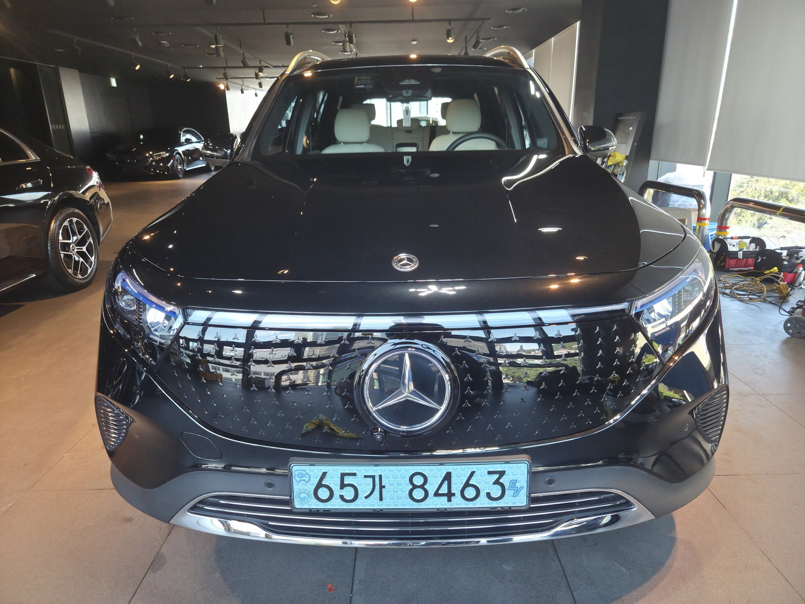
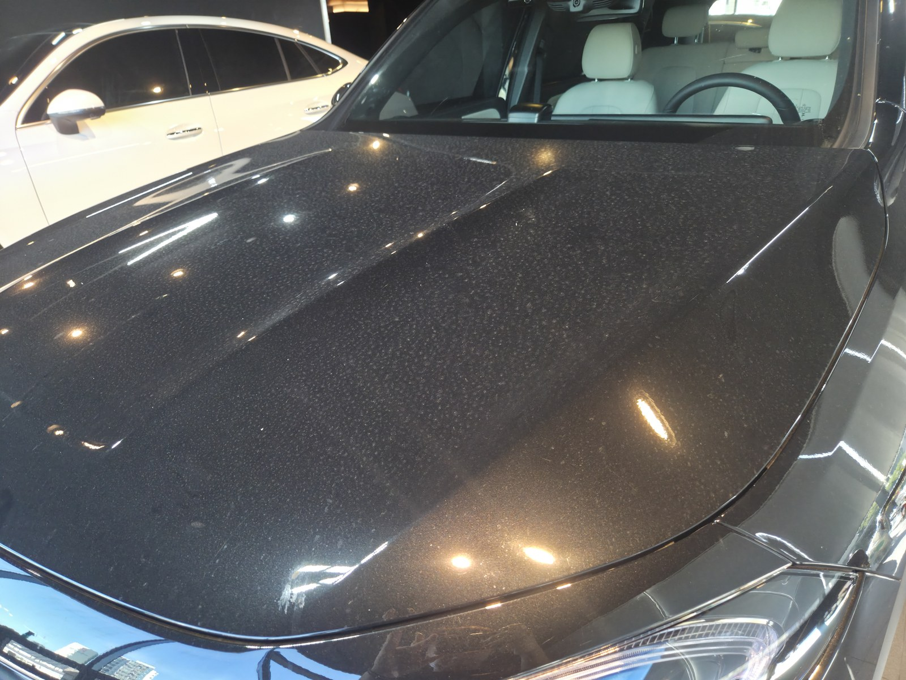
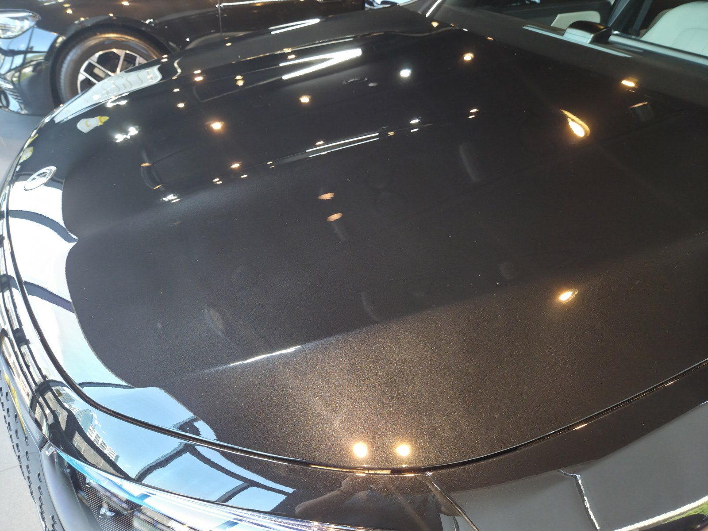
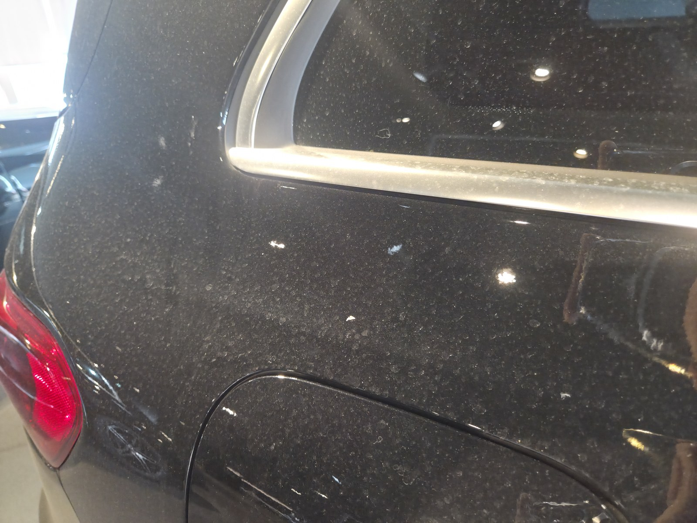
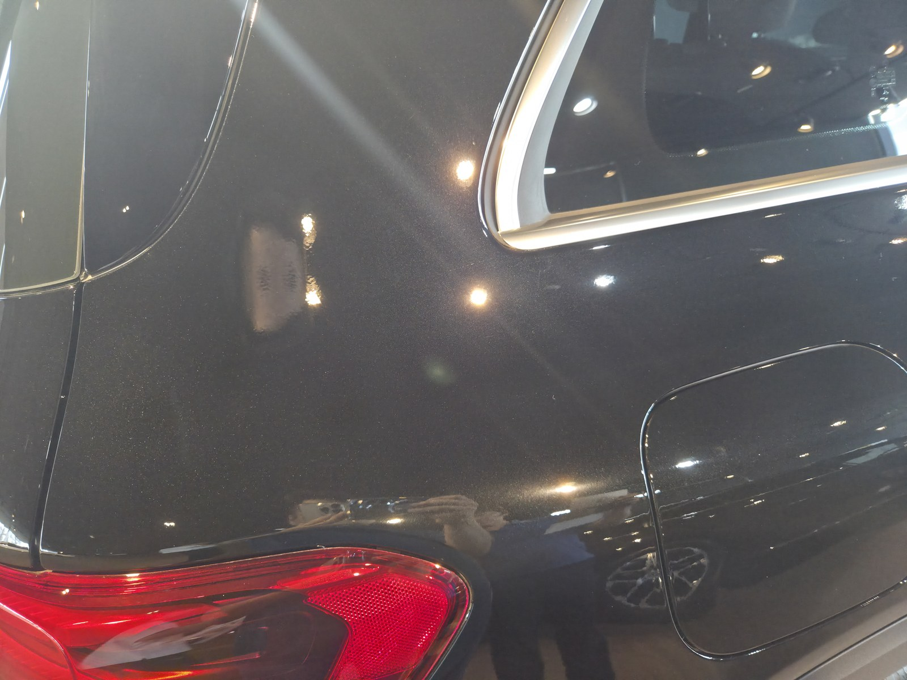
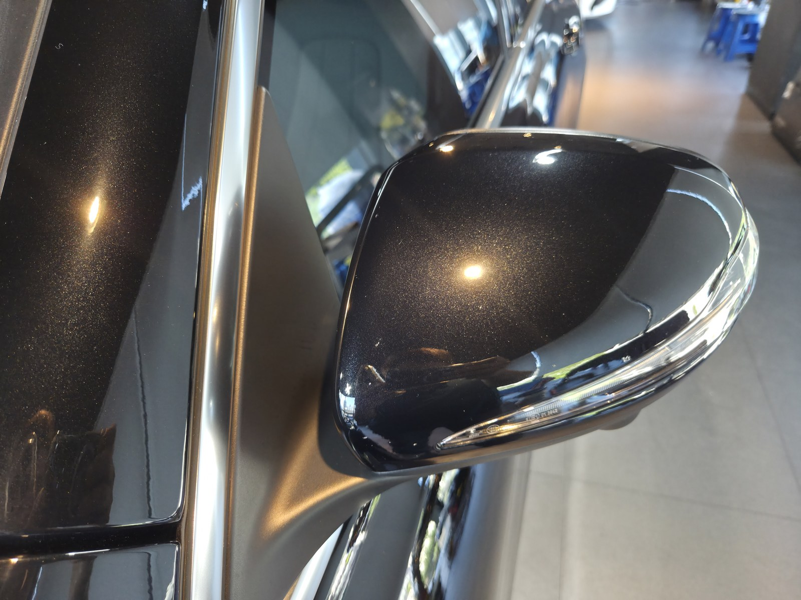
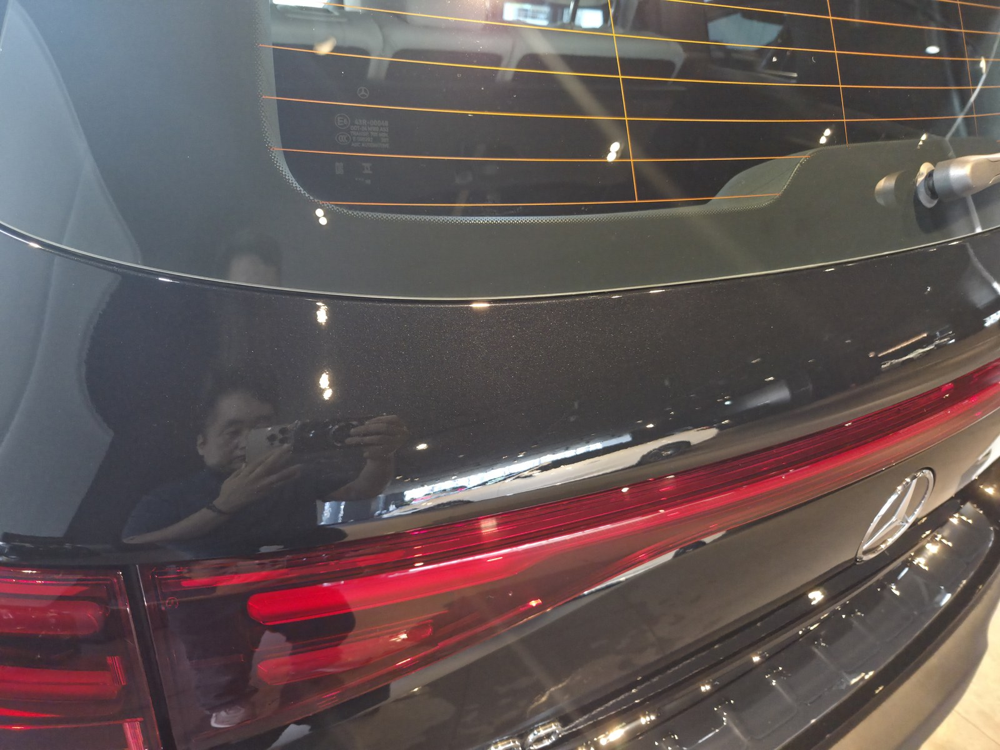

부산 쉴드광택에 들어온 벤츠 EQB300입니다. 검정 바디입니다.
이 차는 도장면 전체를 뒤덮은 워터스팟(물자국)을 부산 광택 제거광택으로 걷어냈습니다.

워터스팟은 세차만으로 안 지워집니다
입고됐을 때 후드부터 도어, 리어펜더까지 패널 전체가 자글자글한 하얀 반점으로 덮여 있었습니다.
워터스팟은 물이 마르면서 남은 미네랄·석회 성분이 도장면에 눌어붙은 자국입니다. 세제로는 표면만 씻길 뿐, 박혀 있는 층까지는 못 걷어냅니다. 이 정도로 패널 전체에 고르게 앉아 있다는 건, 세차 후 물기를 제대로 닦지 못한 상태가 여러 번 반복됐다는 뜻입니다.
제거광택은 필요한 만큼만 깎는 작업입니다
물자국을 없앤다고 클리어코트를 마구 깎으면, 정작 도장 수명을 깎는 일이 됩니다.
그래서 물자국 깊이를 보고 필요한 만큼만 컴파운드와 패드를 맞춰 걷어냅니다. 16년간 직접 시공하며 잡아온 감각입니다. 이번 EQB300처럼 방치 기간이 길어 자국이 깊게 박힌 경우일수록, 무리하게 한 번에 밀지 않고 단계를 나눠 접근합니다.
기술자의 팁
비를 맞은 뒤나 세차 후 물기를 오래 방치하는 습관이 검정차 물자국의 가장 큰 원인입니다. 물방울이 마르기 전에 닦아주는 것만으로도 재발 속도를 크게 늦출 수 있습니다.
작업 전후, 어떻게 달라졌나
말로 "물자국을 걷어냈습니다"라고 하는 것보다, 전후를 비교하는 게 정확합니다.


후드 전체를 덮고 있던 물자국이, 작업 후 조명이 또렷하게 맺히는 면으로 정리됐습니다


리어펜더 — 반점이 깔려 있던 면이 매끈하게 정리됐습니다
마감 후
검정 바디 위로 조명과 주변 사물이 왜곡 없이 맺힙니다.
이렇게 반사가 또렷하게 떨어진다는 건, 제거광택으로 표면을 평탄하게 잡았다는 뜻입니다.


제거광택 후, 이렇게 관리하세요
광택은 시공으로 끝이 아닙니다. 관리로 재발 속도가 갈립니다.
비를 맞은 뒤에는 물기를 오래 두지 말고 닦아주십시오. 발수·방오 성능이 있는 유리막코팅을 함께 올리면 물방울이 맺혀 흐르는 시간 자체가 줄어 워터스팟 재발을 더 늦출 수 있습니다.
자주 묻는 질문
Q. 워터스팟(물자국)은 세차만으로 안 지워지나요?
A. 일반 세차로는 잘 안 지워집니다. 물이 마르며 남은 미네랄이 도장면에 눌어붙은 자국이라, 제거광택으로 그 층을 걷어내야 정리됩니다.
Q. 도장 전체가 자글자글할 정도면 얼마나 방치된 건가요?
A. 패널 전체에 고르게 물자국이 앉아 있었다는 건, 물기를 제대로 닦지 못한 상태가 여러 번 반복됐다는 뜻입니다. 방치 기간이 길수록 제거 난이도가 올라갑니다.
Q. 광택을 하면 도장이 얇아지지 않나요?
A. 필요한 만큼만 깎습니다. 클리어코트 두께를 보고 물자국 깊이에 맞춰 컴파운드와 패드를 조절합니다. 무조건 세게 깎는 게 정답은 아닙니다.
Q. 제거광택 후 워터스팟 재발을 막으려면 어떻게 하나요?
A. 물기를 오래 방치하지 않는 게 가장 중요합니다. 발수·방오 유리막코팅을 함께 올리면 재발 속도를 더 늦출 수 있습니다.
Q. 쉴드광택 위치와 예약은 어떻게 하나요?
A. 부산 남구 유엔로220 1F 쉴드광택입니다. 예약·상담은 010-3384-1850, 대표 최한중이 직접 상담하고 책임 시공합니다.
물자국이 자글자글해도 늦지 않았습니다.
제품을 직접 만드는 사람이 직접 시공합니다.
부산에서 광택을 고민 중이시면 편하게 연락 주십시오.
어떤 차를 타냐보다 어떻게 타냐가 중요합니다~!
시공 중에는 전화를 받지 못할 때가 많습니다.
카카오톡으로 차종과 원하시는 시공을 남겨주시면 확인 후 답변드립니다.
쉴드광택 · 부산 남구 유엔로220 1F · 대표 최한중